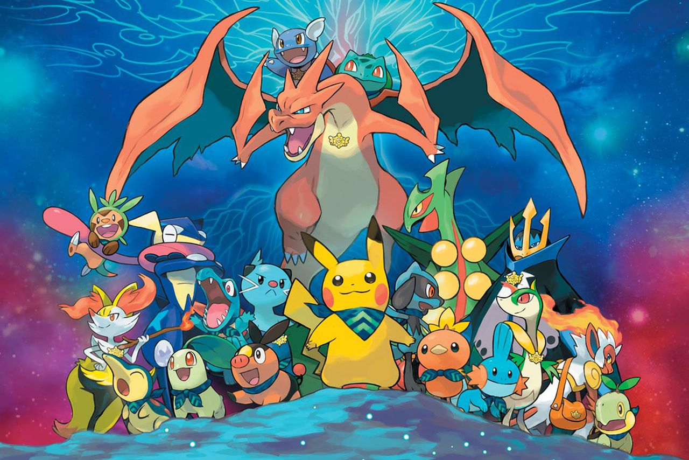

Overview
Pokémon (an abbreviation for Pocket Monsters in Japan) is a Japanese media franchise managed by The Pokémon Company, a company founded by Nintendo, Game Freak, and Creatures. The franchise was created by Satoshi Tajiri in 1996, and is centered on fictional creatures called "Pokémon". In Pokémon, humans, known as Pokémon Trainers, catch and train Pokémon to battle other Pokémon for sport. All media works within the franchise are set in the Pokémon universe. The English slogan for the franchise is "Gotta Catch "Em All!". There are currently 913 Pokémon species.
The franchise began as Pocket Monsters: Red and Green (later released outside of Japan as Pokémon Red and Blue), a pair of video games for the original Game Boy handheld system that were developed by Game Freak and published by Nintendo in February 1996. It soon became a media mix franchise adapted into various different media. Pokémon is estimated to be the highest-grossing media franchise of all time. The Pokémon video game series is the fourth best-selling video game franchise of all time with more than 440 million copies sold and one billion mobile downloads. The Pokémon video game series spawned an anime television series that has become the most successful video game adaptation of all time with over 20 seasons and 1,000 episodes in 192 countries. The Pokémon Trading Card Game is the highest-selling trading card game of all time with over 43.2 billion cards sold. In addition, the Pokémon franchise includes the world's top-selling toy brand, an anime film series, a live-action film (Detective Pikachu), books, manga comics, music, merchandise, and a temporary theme park. The franchise is also represented in other Nintendo media, such as the Super Smash Bros. series, where various Pokémon characters are playable.
Concept
Pokémon executive director Satoshi Tajiri first thought of Pokémon, albeit with a different concept and name, around 1989, when the Game Boy was released. The concept of the Pokémon universe, in both the video games and the general fictional world of Pokémon, stems from the hobby of insect collecting, a popular pastime which Tajiri enjoyed as a child. Players are designated as Pokémon Trainers and have three general goals: to complete the regional Pokédex by collecting all of the available Pokémon species found in the fictional region where a game takes place, to complete the national Pokédex by transferring Pokémon from other regions, and to train a team of powerful Pokémon from those they have caught to compete against teams owned by other Trainers so they may eventually win the Pokémon League and become the regional Champion. These themes of collecting, training, and battling are present in almost every version of the Pokémon franchise, including the video games, the anime and manga series, and the Pokémon Trading Card Game (TCG).
In most incarnations of the Pokémon universe, a Trainer who encounters a
wild Pokémon has the ability to capture that Pokémon by throwing a
specially designed, mass-producible spherical tool called a Poké Ball at
it. If the Pokémon is unable to escape the confines of the Poké Ball, it
is considered to be under the ownership of that Trainer. Afterwards, it
will obey whatever commands it receives from its new Trainer, unless the
Trainer demonstrates such a lack of experience that the Pokémon would
rather act on its own accord. Trainers can send out any of their Pokémon
to wage non-lethal battles against other Pokémon; if the opposing
Pokémon is wild, the Trainer can capture that Pokémon with a Poké Ball,
increasing their collection of creatures. In Pokémon Go, and in Pokémon:
Let's Go, Pikachu! and Let's Go, Eevee!, wild Pokémon encountered by
players can be caught in Poké Balls, but generally cannot be battled.
 Pokémon already owned by other Trainers cannot be captured, except under
special circumstances in certain side games. If a Pokémon fully defeats
an opponent in battle so that the opponent is knocked out ("faints"),
the winning Pokémon gains experience points and may level up. Beginning
with Pokémon X and Y, experience points are also gained from catching
Pokémon in Poké Balls. When leveling up, the Pokémon's battling aptitude
statistics ("stats", such as "Attack" and "Speed") increase. At certain
levels, the Pokémon may also learn new moves, which are techniques used
in battle. In addition, many species of Pokémon can undergo a form of
metamorphosis and transform into a similar but stronger species of
Pokémon, a process called evolution; this process occurs spontaneously
under differing circumstances, and is itself a central theme of the
series. Some species of Pokémon may undergo a maximum of two
evolutionary transformations, while others may undergo only one, and
others may not evolve at all. For example, the Pokémon Pichu may evolve
into Pikachu, which in turn may evolve into Raichu, following which no
further evolutions may occur. Pokémon X and Y introduced the concept of
"Mega Evolution," by which certain fully evolved Pokémon may temporarily
undergo an additional evolution into a stronger form for the purpose of
battling; this evolution is considered a special case, and unlike other
evolutionary stages, is reversible.
Pokémon already owned by other Trainers cannot be captured, except under
special circumstances in certain side games. If a Pokémon fully defeats
an opponent in battle so that the opponent is knocked out ("faints"),
the winning Pokémon gains experience points and may level up. Beginning
with Pokémon X and Y, experience points are also gained from catching
Pokémon in Poké Balls. When leveling up, the Pokémon's battling aptitude
statistics ("stats", such as "Attack" and "Speed") increase. At certain
levels, the Pokémon may also learn new moves, which are techniques used
in battle. In addition, many species of Pokémon can undergo a form of
metamorphosis and transform into a similar but stronger species of
Pokémon, a process called evolution; this process occurs spontaneously
under differing circumstances, and is itself a central theme of the
series. Some species of Pokémon may undergo a maximum of two
evolutionary transformations, while others may undergo only one, and
others may not evolve at all. For example, the Pokémon Pichu may evolve
into Pikachu, which in turn may evolve into Raichu, following which no
further evolutions may occur. Pokémon X and Y introduced the concept of
"Mega Evolution," by which certain fully evolved Pokémon may temporarily
undergo an additional evolution into a stronger form for the purpose of
battling; this evolution is considered a special case, and unlike other
evolutionary stages, is reversible.
In the main series, each game's single-player mode requires the Trainer to raise a team of Pokémon to defeat many non-player character (NPC) Trainers and their Pokémon. Each game lays out a somewhat linear path through a specific region of the Pokémon world for the Trainer to journey through, completing events and battling opponents along the way (including foiling the plans of an evil team of Pokémon Trainers who  serve as antagonists to the player). Excluding Pokémon Sun and Moon and Pokémon Ultra Sun and Ultra Moon, the games feature eight powerful Trainers, referred to as Gym Leaders, that the Trainer must defeat in order to progress. As a reward, the Trainer receives a Gym Badge, and once all eight badges are collected, the Trainer is eligible to challenge the region's Pokémon League, where four talented trainers (referred to collectively as the "Elite Four") challenge the Trainer to four Pokémon battles in succession. If the trainer can overcome this gauntlet, they must challenge the Regional Champion, the master Trainer who had previously defeated the Elite Four. Any Trainer who wins this last battle becomes the new champion.
Pokémon Universe
Pokémon is set in the fictional Pokémon universe. There are numerous regions that have appeared in the various media of the Pokémon franchise. There are 8 main series regions set in the main series games: Kanto, Johto, Hoenn, Sinnoh/Hisui, Unova, Kalos, Alola, and Galar. Each of the eight generations of the main series releases focuses on a new region. Every region consists of several cities and towns that the player must explore in order to overcome many waiting challenges, such as Gyms, Contests and villainous teams. At different locations within each region, the player can find different types of Pokémon, as well as helpful items and characters. Different regions are not accessible from one another at all within a single game, only with the exception of Kanto and Johto being linked together in Pokémon Gold, Silver, Crystal, HeartGold and SoulSilver versions. There are also regions set in spinoff games and two islands in the Pokémon anime (Orange Islands and Decolore Islands), all still set within the same fictional universe.
Each main series region in the Pokémon universe is based on a real world location. The first 4 introduced regions (Kanto, Johto, Hoenn, and Sinnoh/Hisui) are based on parts of Japan, with later regions being based on parts of the United States (New York City is Unova and Hawaii is Alola), France (Kalos), the United Kingdom (Galar), and Spain and Portugal (generation 9 region).